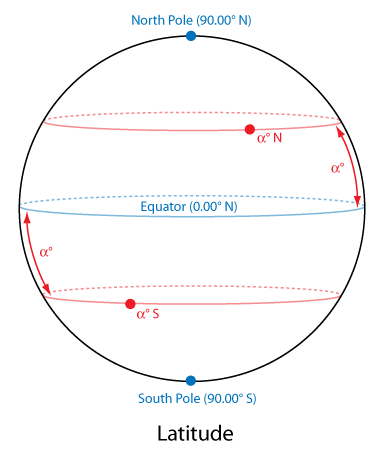
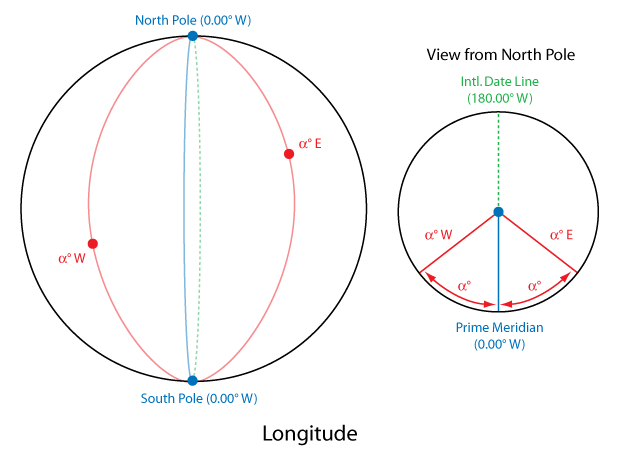

Triangulation is an ancient technique for locating points in a coordinate system based on the measurement of angles, as opposed to the measurement of distances. This makes it especially useful for precisely locating points that are not practically reachable, as long as one can determine what direction they are in.
In this problem, you are trying to locate a radio transmitter somewhere on Earth, using angle measurements from two known points. At each of the given points, the angle to the transmitter is determined by the angle between a shortest path to the North Pole and a shortest path to the transmitter, measured clockwise looking from above the surface of the earth. Paths are constrained to the surface of the earth, and the earth's surface is assumed to be a perfect sphere.
It is guaranteed that neither of the given points is at the North Pole or the South Pole (to avoid ambiguity in angle measurements), and one may assume that the transmitter is located at a third (distinct) point which is uniquely locatable using the measurements.
Points on the Earth are denoted using latitude and longitude notation in decimal degrees (rounded to two decimal places). See the figures for an explanation of the latitude/longitude system. Note that for this problem, the equator's latitude must be reported as "0.00 N", while the longitude is written "0.00 W" at the Prime Meridian and "180.00 W" at the International Date Line. Furthermore, the longitude at the Poles should be given as "0.00 W". In other words, where ambiguity exists, the use of "0.00" and/or "N/W" is dictated.
Input begins with the number of test cases on its own line. Each test case consists of two lines, each containing the latitude and longitude of a point followed by the angle to the transmitter (all of these are given as real numbers).
For each test case, output a line containing the latitude and longitude of the transmitter, rounded to two decimal places in decimal degrees.

1 0.00 N 45.00 E 180.00 0.00 N 45.00 W 180.00
90.00 S 0.00 W